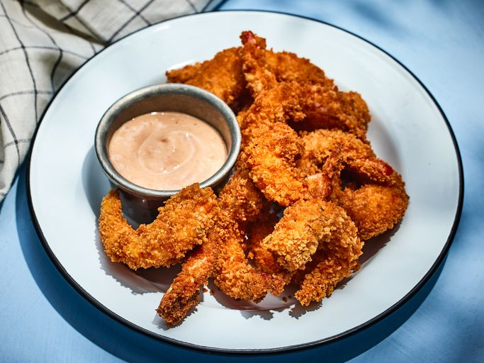

Recipe for Deep Fried Shrimp

Ingredients for Deep Fried Shrimp
- 1 pound medium shrimp, peeled
- 1/2 teaspoon salt
- 1/2 teaspoon ground black pepper
- 2 1/2 teaspoon garlic powder
- 1 cup all-purpose flour
- 1 teaspoon paprika
- 2 large eggs, beaten
- 1 cup panko crumbs
- 1 quart vegetable oil for frying
Directions for cooking
- Gather all ingredients.
- Place shrimp in a bowl and season with salt, pepper, and garlic powder.
- Mix flour and paprika together in a shallow bowl. Place eggs in a second bowl and panko in a third bowl.
- Heat oil in a deep fryer or deep skillet to 375 degrees F (190 degrees C). Dip each shrimp into flour mixture, then into egg, and finally into panko crumbs to coat.
- Fry a few shrimp at a time in the hot oil until golden brown, about 5 minutes.
- Remove with a slotted spoon and drain on paper towels before serving.
- Serve and enjoy!